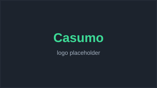
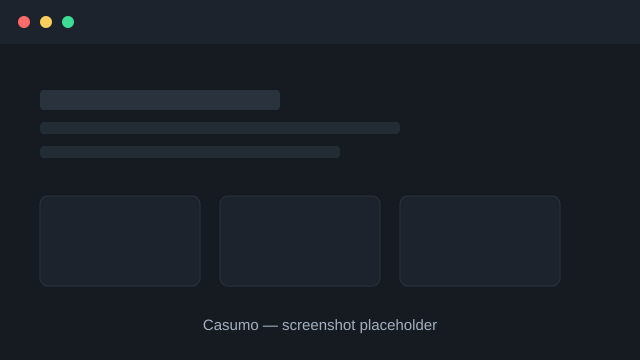

Casumo Review 2026

Last updated: · By Sarah Bennett, Editor & Responsible Gambling Lead
Verdict
Casumo scores 4.3 out of 5. It is best for players who enjoy a playful, gamified experience with levels, rewards and a distinctive design. Its main drawback is that the game and reward mechanics can distract from the core casino for players who just want to play.
Casumo quick facts
| Overall rating | |
|---|---|
| Founded | 2012 |
| Operator | Casumo Services Ltd |
| Headquarters | Malta |
| Licences | UK Gambling Commission & Malta Gaming Authority |
| Key features | Gamified 'adventure' system, 1,500+ slots, live casino |
| Welcome bonus | Welcome package for new players |
| Best for | Gamified, playful casino experience |
Casumo pros and cons
Pros
- Distinctive, well-designed gamified experience
- Licensed by the UK Gambling Commission and Malta Gaming Authority
- Large, well-curated slot library
- Clean, award-winning interface on desktop and mobile
- Solid responsible-gambling controls
Cons
- Gamification won't appeal to players who want a plain casino
- Bonus wagering varies and can be steep
- Not available in some regions
Is Casumo safe and legit?
Yes. Casumo is operated by Casumo Services Ltd and licensed by the UK Gambling Commission and the Malta Gaming Authority. It has run since 2012 and won industry awards for its design, making it an established and well-regulated operator.
Casumo's licences require independent game-fairness testing, segregation of player funds and anti-money-laundering controls, all of which apply regardless of the site's playful presentation.
Players can confirm the licence in the footer, must complete identity verification before withdrawals, and can set deposit limits, take time-outs or self-exclude at any point.
How does Casumo's gamification work?
Casumo turns play into an 'adventure': you progress through levels and belts as you play, unlocking rewards along the way. It is the brand's signature feature and the main reason players choose it over a more conventional casino.
The system is designed to make regular play feel more engaging, with visual progress and occasional reward drops layered on top of the standard games.
Players who prefer a straightforward casino can largely ignore the mechanics and simply play the slots and tables, but the gamification is central to Casumo's identity.
What bonus does Casumo offer new players?
Casumo offers a new-player welcome package, typically combining a deposit match with bonus spins. The exact value, minimum deposit and wagering requirement vary by country and change regularly, so always read the current terms before depositing.
Confirm the match percentage, spin count and wagering multiplier against the live promotions page for your market.
As with any casino, weigh the wagering requirement and eligible games rather than the headline figure when deciding whether the offer is worth taking.
How fast are Casumo withdrawals?
Casumo processes withdrawals within standard industry times. E-wallet payouts are usually completed within one to two days of verification, while cards and bank transfers typically take two to five business days depending on the method.
Completing identity verification early is the best way to ensure a smooth first withdrawal without a document-check delay.
Confirm exact processing times for each payment method on the Casumo banking page for your region.
What games does Casumo have?
Casumo offers well over a thousand slots, a range of table games and a live casino with dedicated tables. Content comes from major studios such as NetEnt, Play'n GO, Pragmatic Play and Evolution, covering classics, jackpots and game shows.
The library is well curated and easy to browse, with clear categories and search that suit both casual and regular players.
The live casino rounds out the offering with HD-streamed tables across a range of stakes, available around the clock.
What payment methods and support does Casumo offer?
Casumo supports the standard range of deposit and withdrawal options, typically including debit cards, popular e-wallets and bank transfer, with secure, encrypted processing. Customer support is available via live chat and email, backed by a help centre covering common account, payment and bonus questions.
Before you deposit, check which methods are available in your country and whether any carry fees or slower processing times. E-wallets are usually the quickest choice for both deposits and withdrawals, while bank transfers take longest.
Live chat is the fastest route for an urgent issue, while email suits non-urgent queries where you want a written record. We judge Casumo's support on both availability and the quality of its answers, not just how quickly someone replies.
Casumo lobby at a glance

How Casumo compares to alternatives
Not sure Casumo is the right fit? Here is how it stacks up against two strong alternatives. For the full picture, see our side-by-side comparison of every casino.
How we tested Casumo
We assessed Casumo using our standard six-criteria framework: licensing and safety, payout speed, bonus fairness, game range, mobile experience and support. We verified the licence against the regulator's public register, read the bonus terms in full and checked the cashier and help options first-hand.
Our overall score of 4.3/5 reflects how those factors balance out for a typical player in our audience. The best casino for you depends on what you value most, so use our comparison table to weigh Casumo against every alternative we review. You can read the full framework on our methodology page.
Casumo FAQ
Is Casumo legit?
Yes. It is operated by Casumo Services Ltd and licensed by the UK Gambling Commission and Malta Gaming Authority.
What makes Casumo different?
Its gamified 'adventure' system, where you level up and unlock rewards as you play, sets it apart from conventional casinos.
What is the Casumo welcome bonus?
A new-player package usually combining a deposit match and bonus spins. Amounts and wagering vary by country.
How long do Casumo withdrawals take?
E-wallets usually take one to two days after verification; cards and bank transfers two to five business days.
Does Casumo have live dealer games?
Yes, a live casino with HD-streamed tables across a range of stakes, available 24/7.
Does Casumo work on mobile?
Yes. Casumo has a clean, award-winning mobile experience through the browser and apps.
Sources & references
Licensing and safer-gambling facts in this review can be checked against the following public sources:
- UK Gambling Commission public register — https://www.gamblingcommission.gov.uk/public-register
- Malta Gaming Authority licensee register — https://www.mga.org.mt/
- BeGambleAware – safer gambling advice — https://www.begambleaware.org/